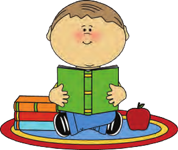

کیارش و پدرش برای خرید به فروشگاهی رفته بودند. آنها یک دفتر، یک مداد و یک شابلون به قیمت های ۱۶۰۰، ۱۸۰۰ و ۲۸۰۰ تومان خریدند. پدر کیارش یک اسکناس ۵۰۰۰ تومانی و یک اسکناس ۲۰۰۰ تومانی به فروشنده داد. فروشنده، حاصل جمع قیمت ها را به طور ذهنی بهدست آورد. سپس، یک اسکناس ۵۰۰ تومانی پس داد و گفت: «۶۷۰۰» بعد یک اسکناس ۲۰۰ تومانی داد و گفت «۶۹۰۰» و در آخر یک سکّهی ۱۰۰ تومانی داد و گفت: «این هم ۷۰۰۰ تومان». کیارش با تعجّب به حرف های فروشنده و روش محاسبه او گوش میکرد. فروشنده چگونه محاسبه کرد و باقیماندهی پول را برگرداند؟
بهنظر شما، کیارش در مدرسه برای جمع کردن قیمت ها و محاسبه باقی ماندهی پول چه روشی را یاد گرفته بود؟